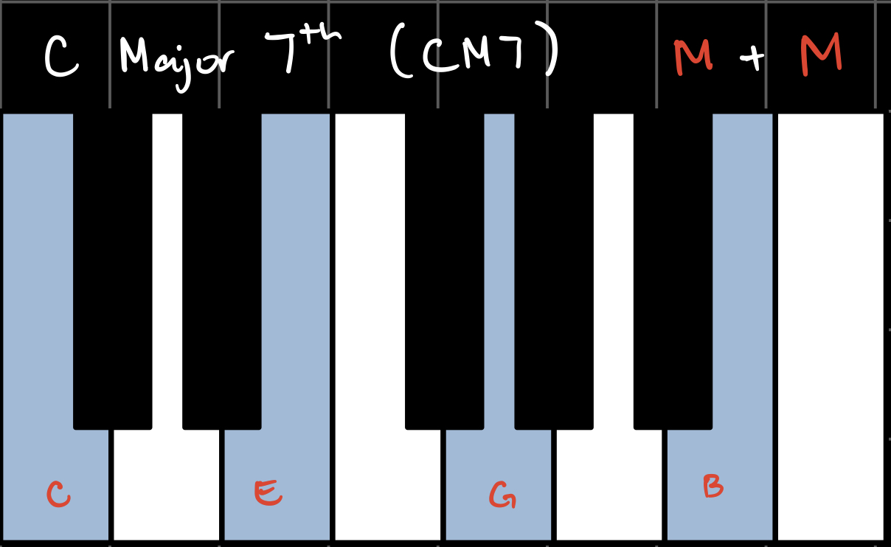
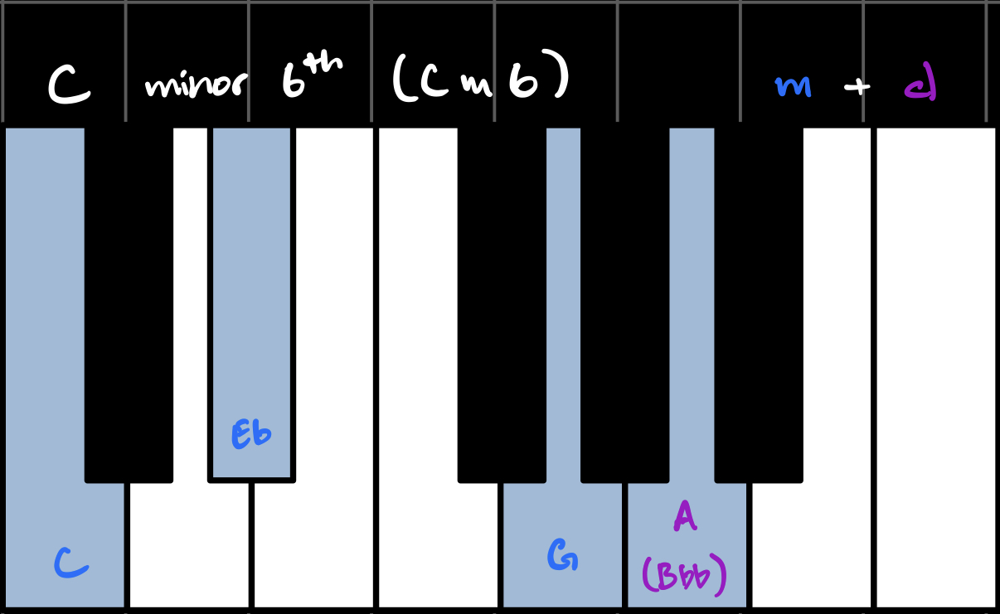
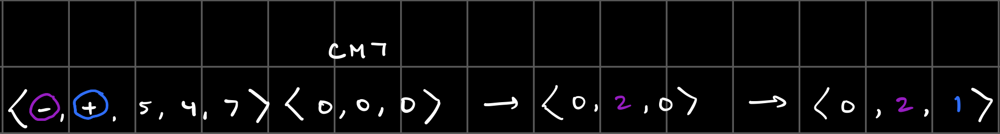

This project uses Conway’s game of life and an extended theory of uniform triadic transformations to deterministically generate compositions for solo piano. It uses the LilyPond text-based music engraver to create traditional western sheet music for each composition.
Click here to see the sheet music from the video above.
Since the composition is deterministic, you can replicate it exactly by choosing the same initial conditions.
PREAMBLE: TRANSFORMATION THEORY
The chord transformations in this project are an extension of UTTs onto seventh chords. While there are many ways to think about seventh chords, I decided to treat them as a combination of a triad and a seventh.
DISCLAIMER: I'm to give you a very quick and somewhat narrow explanation of canonical western music theory, based on what I know and what I think is important, so do take this with a grain of salt.
CHORDS
Triads are made up of a root note, a third, and a fifth. The most basic triad is the major triad, which in the key of C looks and sounds like this:
You might also know about minor triads, which in the key of C looks and sounds like this:
You can see that the only difference from a major triad is the middle note, the third, which in a minor triad is a half-step lower.
Another “flavor” of triad is called a diminished triad, which in the key of C looks and sounds like this:
A diminished triad has both its middle note and top note a half-step lower than in the major triad.
Sevenths also come in major, minor, and diminished flavors. In the key of C, these are the major, minor, and diminished seventh intervals:
When we combine triads with sevenths, we get seventh chords. Each flavor combination has its own name and unique sound. In the key of C, these are all the possible seventh chords using our three flavors:


(Note that the Major/minor 6th chords treat the diminished 7th interval as a 6th interval, which is why they're called 6th chords.)
We can write these 9 types of seventh chords more generally as pitch-set classes:
Finally, we can also write them more compactly as ordered triplets
We can do this with notes and words, or, we can map keys to numbers starting with C=0, and map flavors to numbers with major = 0, minor = 1, diminished = 2.
TRANSFORMATIONS
UTTs are transformations applied to triads, to turn them into other triads. I extended the logic of UTTs to my set of seventh chords, to define transformations from one seventh chord to another. These transformations are defined as a 5-tuple:
Where σt is the “flavor-changer” for the triad, σ7 is the flavor-changer for the seventh, tt+is the root translation on a major triad, tt- is the root translation on a minor triad, and td is the root translation on a diminished triad.
The “flavor-changers” are either + or -, and move the flavor of the triad or the seventh either forward or backwards in this “flavor-cycle”:

The root translations are in the range [0, 11], and translate the root of the chord depending on the type of the triad. For example, consider the the following transformation operating on the chord CM7:
The triad flavor-changer makes the triad diminished.
The seventh flavor-changer makes the seventh minor.

Since CM7 has a major triad, we take the root translation on a major triad.
Thus, this transformation operating on the chord CM7 outputs the chord E 1/2 dim 7.
Now, let’s get into the two parts of the project proper: composition and notation.
1. COMPOSITION
The composition is determined by the states of the cellular automaton. For each timestep, the corresponding state adds 1) a new chord to the chord progression, 2) a new melody sequence, and 3) a new chord sequence. The chord progression defines the harmonic structure of the composition, and the melody and chord sequences are the actual notes to be played.
These three parts are mapped to the automaton with the same two-step process: one state is used to generate potential components, and then the next state is used to “choose” which of those potential components to use in the composition.
1.1 CHORD PROGRESSION
The chord progression starts with the user’s choice of an initial chord. We’ll call this chord C0, and the initial automaton state S0. Then, for each alive cell a0i in the state S0, I create a possible transformation t0i based on the indices of a0i as follows:
Where F is determined by the list of previously alive cells, as follows:
So the state S0 gives me a list L0 of k0 possible transformations, one for each alive cell in S0.
Then, the automaton gets updated into state S1. In this new state, there are k1 alive cells.
The k1th transformation on the list L0 is applied to the chord C0 to get the next chord in the progression, C1:
This process then repeats for each next state of the automaton, and generates the chord progression for the composition.
1.2 MELODY SEQUENCE
The melody sequence is built up of ‘note’ structures, which I defined as n = {d, p} where d = duration and p = pitch. I chose the durations to be in the range [1, 16] x 1/16th note. The pitches are chosen from a ‘scale’, based on the chord type:
I somewhat arbitrarily defined these scales to include the 7 notes that sounded best over each chord.You’ll notice that each scale includes the pitch 12, which doesn’t actually exist - I used this to indicate rests.
For fun, I have also included the canonical western music theory name for each of these scales, where applicable.
Here’s what they look and sound like in the key of C:
From the initial automaton state S0, I created a list LN0 of k0 possible notes based on the indices of the alive cells a0i as follows:
Then, in the next automaton state S_1, I looked at the cells that survived from state S_0 to S_1, and chose their corresponding notes (in order of the list).
This process repeats for each new state of the automaton, to generate a melody sequence for each chord in the chord progression.
1.3 CHORD SEQUENCE
Finally, I also chose to generate a chord sequence, to make the left-hand part more interesting. Chord sequence ‘notes’ are encoded similarly as n = {d, p} where d = duration in the same range. The possible pitches p now consist of all possible 1, 2, and 3-note combinations of the four notes within the chord:
With [4] indicating a rest. This allows for more interesting arpeggiation and/or partial voicing of the chords in the left hand.
The sequence of chord ‘note’ objects is determined exactly the same way as the melody sequence, except that chord ‘notes’ are now mapped to indices as follows:
Thus, we have successfully mapped each automaton state to a chord progression, a melody sequence, and a chord sequence. This composition information is the output generated at the bottom of the screen, with durations in parentheses:
However, there is a slight issue: the total duration of each chord sequence doesn’t necessarily match the total duration of it’s accompanying melody sequence. I chose to deal with this problem in the notation step.
2. NOTATION
The notation portion of the project essentially consists of meticulously constructing strings that are readable by the LilyPond music engraver. The baseline code sets up an empty document with a title, composition information, and a blank piano staff:
(filler notes necessary to make it compile)
The key of the composition is set from the key and triad flavor of the initial chord (diminished triads —> minor key). In LilyPond, notes are written by their letter name, and followed by “is” for sharp or “es” for flat. Unfortunately LilyPond is not smart enough to decipher whether an accidental should be notated as a sharp or as a flat, so I hard-coded how each of the 12 tones should be notated in each key, major and minor:
(This is entirely arbitrary and based on personal taste; if you are very proper and following western theory rules, you’re supposed to make accidentals sharp when the melody trends upwards, and flat when the melody trends downwards, but also sometimes it depends on the chord progression you’re invoking, and also sometimes depends on the chord progression you’re hinting at but not actually using, and so it’s very confusing and arbitrary and it’s easier to just hard-code it based on whether or not I like calling things sharps or flats in particular keys.)
Durations in LilyPond are as follows:
One annoying thing with duration notation is that readers of western music are typically used to “friendly” duration notation that makes it as clear as possible where notes fall in relation to beats. For example:
Although these two measures depict the exact same note with the exact same duration, the right version is much more readable, due to the notation that tells you the note takes up the last 16th of the first beat, all of the second and third beat, and the first three 16ths of the last. By contrast, the second version is much harder to read, because it only tells you to wait three 16ths, then play a note lasting three quarter notes, and then rest for one 16th. (It may seem easier to simply count to twelve 16ths than to keep track of the beat and its relation to the note all at once, but it’s actually much easier, rhythmically, to benchmark note durations against beats.)
LilyPond will automatically break your notes at measures. However, it doesn’t automatically write “friendly” notation within measures. I handled this problem by checking how each note falls in relation to beats, by looking at totalTime % 4. If it crosses a beat, I broke the note at the crossing point and wrote it with a tie instead.
Finally, to solve the issue of chord sequence timing versus melody sequence timing, I added an extra handler in the parsing of the chord sequence:
This ensures that the chord sequence doesn’t overrun the melody sequence, and also conversely ensures that the last note of the chord sequence stretches to match the length of the melody sequence.
RECAP
The following diagram depicts the structure of this project in a bit more detail:
Thanks for reading this far, and thanks for a great semester!